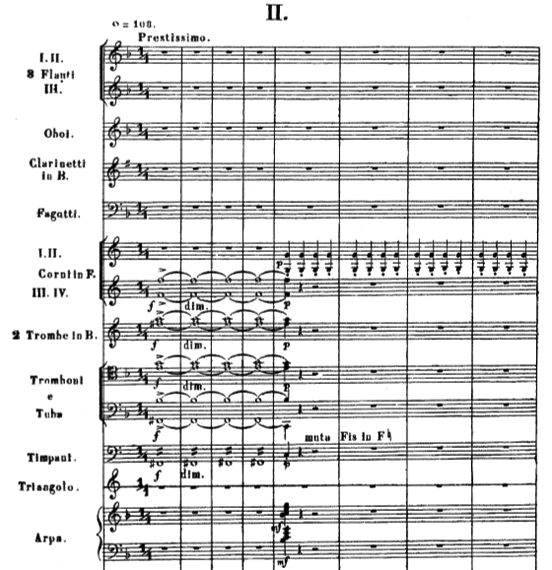

Symphony No. 2 in B Minor
I. Allegro
II. Scherzo(Prestissimo-Allegretto-Tempo I)
III. Andante
IV. Finale (Allegro)

보로딘 교향곡 2번은 러시아 국민악파 5인조의 곡들 중 현재까지 교향곡으로 가장 많이 연주되는 곡입니다.
러시아의 제 2의 도시인 상트페테르스부르크(Санкт-Петербург)에서 작곡되었으며 교향곡 1번 초연의 성공으로 두번째 교향곡을 결심한 보로딘이, 부인인 에카테리나에게 헌정된 작품입니다. 이 작품은 1869년 착수하였으나 앞서 들었던 이고르왕자 등의 다른 작품 활동으로 인하여 1877년에 완성되었습니다. 1877년 2월 14일 나프라브니크(E. Napravnik)의 지휘로 상트페테르스부르크의 러시아 음악 협회 연주회에서 초연되었습니다.
1악장 Allegro, B단조, 소나타 형식.
현의 유니즌을 주축으로한 제 1 주제가 강하게 연주. 1 주제의 후반은 대조적인 D장조의 유쾌한 분위기로 이어지며 목관의 선율에 바이올린의 피치카토 리듬이 연주됩니다. 경과부에 힘찬 울림이 나타난 후 다시 1 주제가 반복. 전악기가 합주로 강한 리듬을 울리고 제 2 주제부로 이어집니다.
제 2 주제는 D장조로 먼저 첼로가 노래하고 다른 악가기 화음을 연주합니다. 러시아 민요적 성격의 연주는 목관의 합주로 이어지고 다시 현으로 연결되며 발전하며, 이후 아니마토 아사이의 3/2박자, 4/4박자의 복합박자로 강한 악센트의 제 1 주제의 동기를 반복하며 제시부가 마무리 되고, 전개부로 연결됩니다.
제 1 주제의 전반부 동기를 소재로 시작하여 팀파니의 연타에 클라리넷, 파곳 등이 스타카토 리듬을 연주하면 현이 제 1 주제와 제 2 주제의 혼합된 음형을 연주. 제 1 주제의 후반부가 강주되고 분위기가 바뀌면서 제 2 주제가 전개. 다시 전개부 초반의 분위기가 돌아오면 힘차게 전개되어 정점에 오르고 재현부로 이어짐. C장조에서 E flat장조로 연주되면서 새로운 악상이 제시되고, 최후에는 아지타토로 강한 코다가 연결.
2악장 Scherzo. Prestissimo, F장조, 주부는 4/4박자 - Trio. Allegretto
으뜸조 화음의 금관합주로 시작하여, 현의 피지카토와 하프로 이어지면 혼이 C음의 스타카노 리듬을 연주하고 현과 목관으로 이어짐. 이 동기를 발전시킨 후 싱코페이션의 선율이 현으로 연주되고, 다시 앞의 스케르쪼 주제가 되풀이 됨. 트리오는 트라이앵글과 하프의 울림, 클라리넷의 반음계적 하강 등을 배경으로 오보에의 독주. 클라리넷, 플루트, 관악기에 이어 현과 관이 주고받는 가운데 전개한 후 주부가 처음과 같이 재현되고 코다로 연결.

3악장 Andante, D flat장조, 4/4박자, 3부 형식
하프의 아르페지오 반주에 클라리넷 독주가 러시아적 선율을 연주하면 호른이 또다른 선율을 노래하고 클라리넷이 이를 받아 연주.
현의 트레몰로가 시작되면 포코 아니마토로 바뀌어 오보에의 새로운 선율이 흐르고 다른 관악기에 차례로 넘겨짐.
중간부에는 반음계 하행의 악상이 지배적. 그 뒤로는 앞에 나타난 악상들의 자유로운 변형이 이루어지고 4악장에 그대로 이어짐.
4악장 Finale. Allegro, B장조, 3/4박자, 소나타 형식.
탬버린, 심벌즈, 큰 북 등이 여기서 처음으로 등장. 저음현과 파곳의 싱코페이트된 리듬위에 바이올린, 비올라가 제 1 주제의 동기를 유도. 전악기에 의한 힘찬 제 1 주제가 제시. D장조로 옮겨지면 곧 클라리넷 독주로 제 2 주제가 연주. 전개부에서는 렌토의 삽입구가 있고 트롬본과 튜바에 의한 육중한 악상이 전개. 연관성을 지닌 새로운 선율이 나타나 본래의 첫머리 악상과 다태롭게 변화. 제 2 주제에 대한 전개가 이어진 뒤, 중후한 화음과 전 타악기의 연주로 마무리된 후 재현부로 연결. 재현부는 제시부를 거의 그대로 옮기고, 최후에는 첫머리 악상에 의해 격력하게 종결.